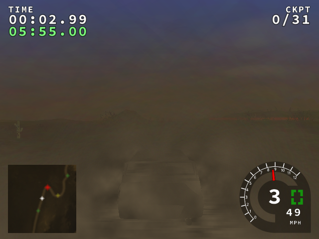
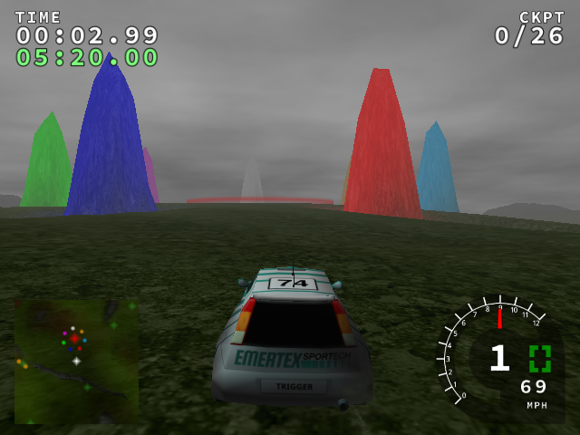
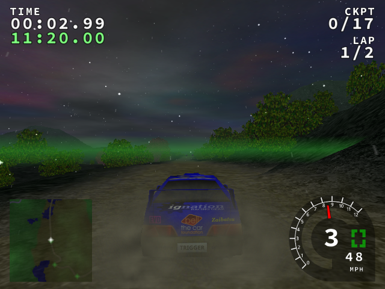
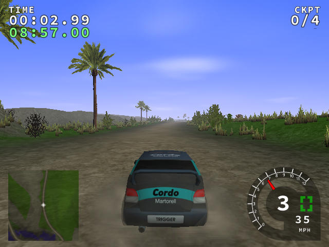
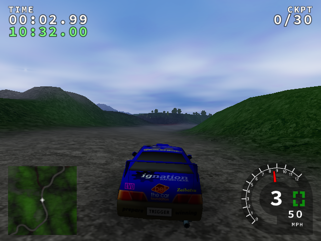
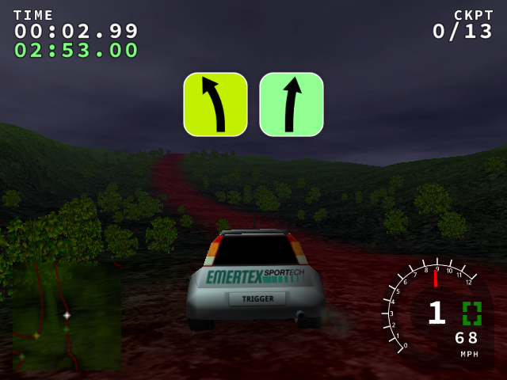
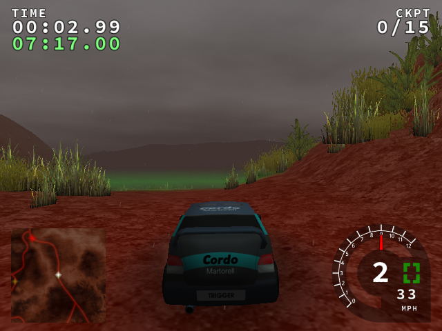

| Stage | Before | After | RGB identical |
|---|---|---|---|
| aegyptian | |  | True |
| ahead | | | True |
| ancient |  | | True |
| april |  | | True |
| coastline |  | | True |
| country |  | | True |
| greenland | |  | True |
| mudbath | |  | True |